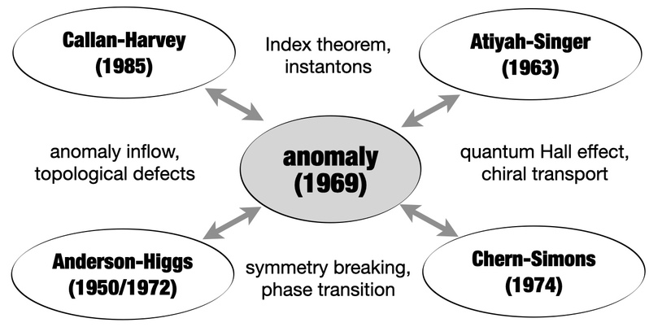
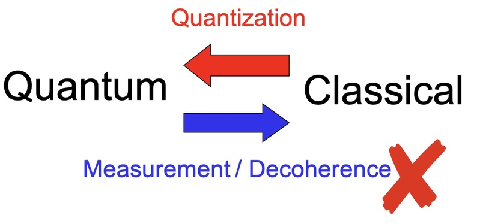
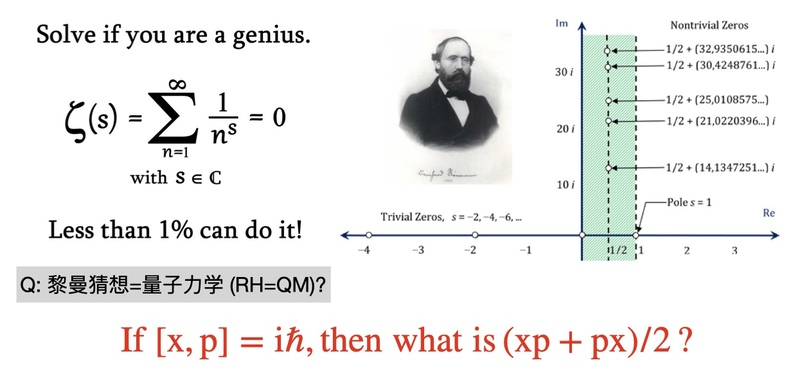
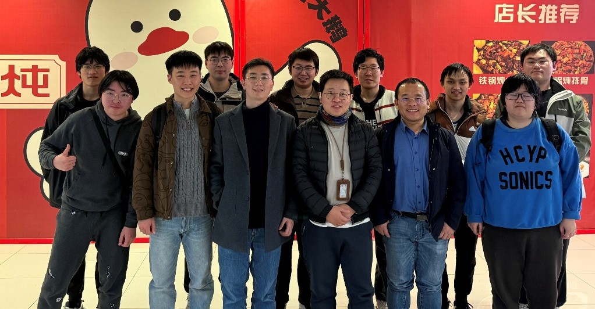

沿着好奇心，
多走几步。
从驱动系统中的反常，到量子测量与数学问题，这里收集主线研究之外的延伸兴趣和早期探索。提出问题，也是研究的一部分。
反常、测量与数学之间
保留原研究笔记中的提问与图示。其中“黎曼猜想与量子力学”的联系是探索性问题，并非已证明的等价结论。
• Floquet gauge anomalies in periodically driven systems: Anomalies are not dangerous, and they are ubiquitous associated with quantum vacuum and topology. We are focusing on exploring anomalies in driven systems [Physical Review Letters 130, 223403 (2023); ].

• Weak measurement and its realizations. Weak measurement can demonstrate the transition from quantum to classical [Light Science & Applications 12:267 (2023); Nature Physics, 16(12), 1206-1210 (2020).]. However, decoherence only leads to the statistics.

• Riemann Hypothesis in quantum physics. Riemann hypothesis equals to Quantum mechanics?

AI 与自由电子：早期探索笔记
• Prompt engineering for writing and free electron quantum neural networks
Prompt engineering三原则:
Principle 1: be very specific in yourinstructions.
Principle 2: is to ask GPT-3 to break itswork into small chunks.
Principle 3: ask GPT-3 to check and improve its own output.
自由电子量子神经网络:
I know nothing yet... But I will.
PDENet 数据库:
算力，算法，数据，数据，数据...
课题组合影
